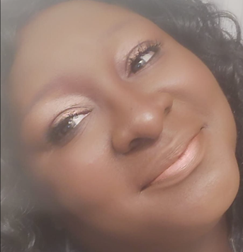
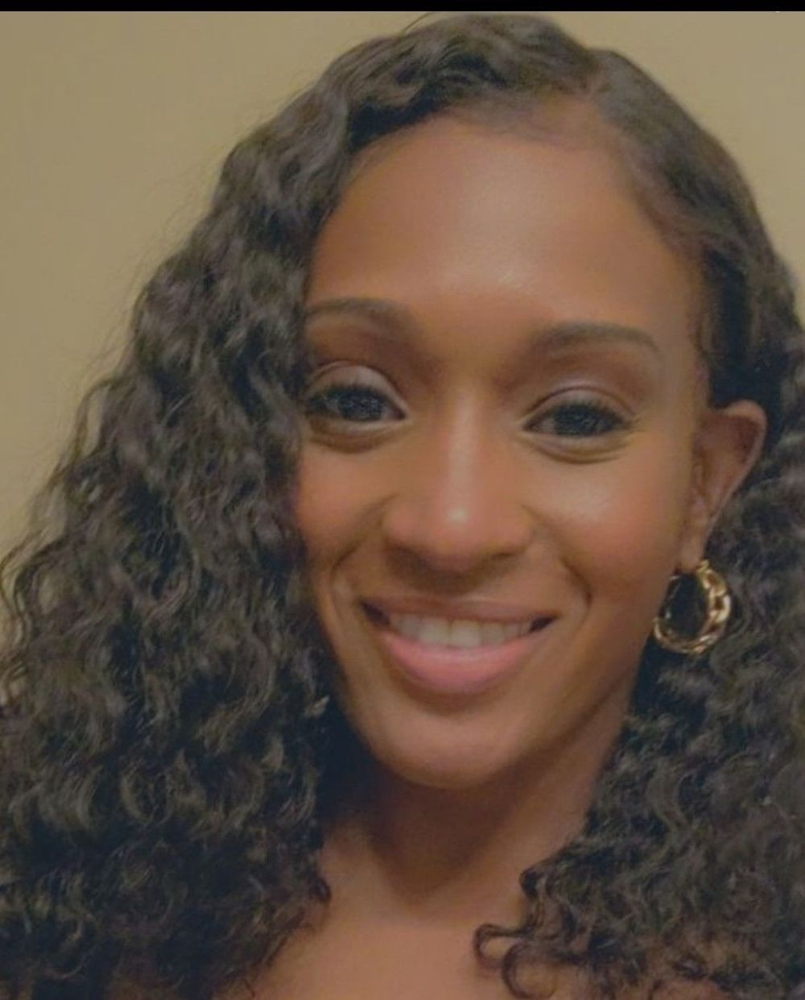
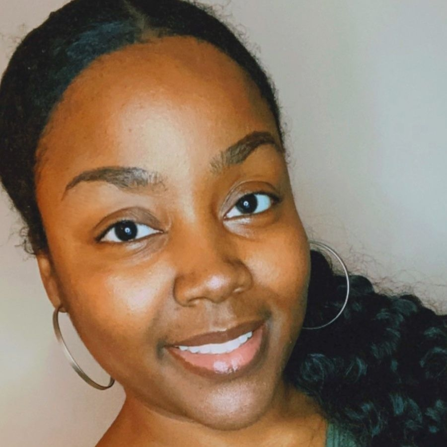

The women who keep Kingdom K.E.Y.S. running, and keep showing up for the sisters we serve.

Stephanie Green
Volunteer Director
Stephanie Green is from Charleston, SC, and now lives in Columbia. She is gratefully loved by her three children, two grandchildren, son-in-law, and siblings. Stephanie has always enjoyed giving back, and prides herself on showing the love of God to everyone she meets, a love she learned from two influential women who helped shape who she is. She knows the importance of a village of love. Stephanie is working toward her sociology degree and plans to open a transitional housing facility for women. She firmly believes that if you only have potatoes and she has the meat, you should come together and fellowship in God’s love.
God isn’t playing with you! Let’s get to work.

Ala Lucky
Financial Coordinator
Ala Lucky lives in Columbia, SC, and has one son who is the light of her life. In her free time she enjoys reading and traveling. As a nurse practitioner and certified life coach, she has brought healing and encouragement to many people over the years. She understands the value of health in the body, the mind, and the spirit, and hopes to bring those values to the women of Kingdom K.E.Y.S. You have the power, tools, and resources to create any life you want. Everything you need is already inside of you.
I’ve learned that people will forget what you said, people will forget what you did, but people will never forget how you made them feel.

Brittany Young
Secretary
Brittany Charmaine Young is a self-love advocate, social activist, peace ambassador, and philosopher, always looking for new ways to shift how we talk to ourselves and each other. She has complete confidence in the power of prayer and the practice of mindfulness, and is certain that God and therapy can co-exist. Her favorite things are lakeside picnics, bookstores, art museums, and making memories with loved ones. She hopes to use her God-given gifts to help many on their journeys.
Talk to yourself like you would to someone you love.
Every woman deserves to live a life of purpose and fulfillment.
We’re dedicated to helping women embrace their potential, define their future, and change the world.